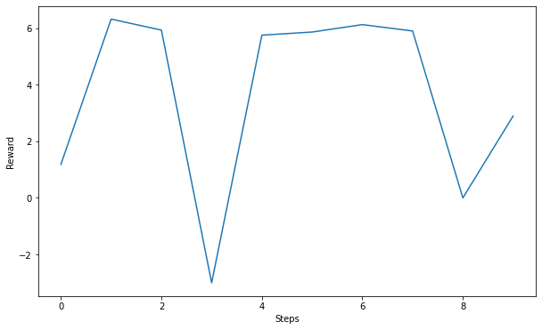

import numpy as np
import matplotlib.pyplot as plt
import time
try:
import google.colab
IN_COLAB = True
except:
IN_COLAB = False
if not IN_COLAB:
import gym
def show_video():
pass
def wrap_env(env):
return env
else:
# Installing Debian and pip packages. It can take a while.
# remove " > /dev/null 2>&1" to see what is going on under the hood
!pip install gym pyvirtualdisplay > /dev/null 2>&1
!apt-get install -y xvfb python-opengl ffmpeg > /dev/null 2>&1
!apt-get update > /dev/null 2>&1
!apt-get install cmake > /dev/null 2>&1
!pip install --upgrade setuptools 2>&1
!pip install ez_setup > /dev/null 2>&1
!pip install gym[atari] > /dev/null 2>&1
import gym
from gym.wrappers import Monitor
import random, math, glob, io, base64
from IPython.display import HTML
from IPython import display as ipythondisplay
from pyvirtualdisplay import Display
display = Display(visible=0, size=(1400, 900))
display.start()
def show_video():
mp4list = glob.glob('video/*.mp4')
if len(mp4list) > 0:
mp4 = mp4list[0]
video = io.open(mp4, 'r+b').read()
encoded = base64.b64encode(video)
ipythondisplay.display(HTML(data='''<video alt="test" autoplay loop controls style="height: 400px;">
<source src="data:video/mp4;base64,{0}" type="video/mp4" /></video>'''.format(encoded.decode('ascii'))))
else:
print("Could not find video")
def wrap_env(env):
env = Monitor(env, './video', force=True)
return envGym environments
Installing gym
In this course, we will mostly address RL environments available in the OpenAI Gym framework:
It provides a multitude of RL problems, from simple text-based problems with a few dozens of states (Gridworld, Taxi) to continuous control problems (Cartpole, Pendulum) to Atari games (Breakout, Space Invaders) to complex robotics simulators (Mujoco, but the license is expensive):
We start by installing gym and its dependencies. Unfortunately, gym only works fully under Linux or MacOS. You can pip install gym on Windows, but will be limited to the most simple environments, excluding for example Atari games (but you can try these instructions: https://towardsdatascience.com/how-to-install-openai-gym-in-a-windows-environment-338969e24d30). This isn’t a big issue as we will only use the simple environments in the exercises, but less fun.
Moreover, it does not work out-of-the-box on colab, as gym opens graphical windows for some environments (e.g. Atari games), what is not possible in the browser. The first cell provides a workaround.
On your computer
On your computer, you first need to make sure you have the right dependencies, especially cmake:
Ubuntu Linux:
apt-get install libglu1-mesa-dev libgl1-mesa-dev libosmesa6-dev xvfb ffmpeg curl patchelf libglfw3 libglfw3-dev cmake zlib1g zlib1g-dev swigMacOSX:
brew install cmake swig boost boost-python sdl2 wgetOn Windows, you may have to have Microsoft Visual C++ build tools installed. The link https://towardsdatascience.com/how-to-install-openai-gym-in-a-windows-environment-338969e24d30 suggests the 2017 version, but Visual C++ 2015-2019 Redistributable seems to also work.
You can then install gym in two steps, installing the atari_py dependency in between to be able to play Atari games.
pip install gym
pip install atari_py
pip install gym[atari]On Colab
On Colab, we need to install a bunch of dependencies (Colab runs a Debian VM under the hood) and define a visualization function that can be called at the end of an episode to visualize it.
The following cell detects whether you run this notebook on colab or not, and imports lots of additional stuff if needed.
Gym interface
The main interest of gym is that all problems have a common interface defined by the class gym.Env. There are only three methods that have to be implemented and used when creating a new environment:
state = env.reset()restarts the environment and returns an initial state s_0.state, reward, done, info = env.step(action)takes an action a_t and returns the new state s_{t+1}, the reward r_{t+1}, a boolean flag indicating whether the current state is terminal and a dictionary containing additional info for debugging (you can ignore it most of the time).env.render()displays the current state of the MDP, either text-based or in a graphical window. When training, this should not be called to save some time.
Additionally, you override the constructor __init__() to setup the state space (called observation space) and the action space.
State and action space can either be :
discrete (
gym.spaces.Discrete(nb_states)), with states being an integer between 0 andnb_states-1.feature-based (
gym.spaces.Box(low=0, high=255, shape=(SCREEN_HEIGHT, SCREEN_WIDTH, 3))) for pixel frames.continuous:
gym.spaces.Tuple(
gym.spaces.Box(-180.0, 180.0, 1), # First joint
gym.spaces.Box(-180.0, 180.0, 1) # Second joint
)Here is an example of a dummy environment with discrete states and actions, where the transition probabilities and rewards are completely random:
class FooEnv(gym.Env):
"""Dummy gym-like environment."""
def __init__(self, nb_states, nb_actions):
"Initialize the environment, can accept additional parameters such as the number of states and actions."
# State space, can be discrete or continuous.
self.observation_space = gym.spaces.Discrete(nb_states)
# Action space, can be discrete or continuous.
self.action_space = gym.spaces.Discrete(nb_actions)
super().__init__()
def reset(self):
"Resets the environment and starts from an initial state."
# Sample one state randomly
self.state = self.observation_space.sample()
return self.state
def step(self, action):
"""
Takes an action and returns a new state, a reward, a boolean (True for terminal states)
and a dictionary with additional info (optional).
"""
self.state = self.observation_space.sample() # Random transition to another state
self.reward = np.random.uniform(0, 1, 1)[0] # Random reward
self.done = False # Continuing task
self.info = {} # No info
return self.state, self.reward, self.done, self.info
def render(self, mode='human'):
"Displays the current state of the environment. Can be text or video frames."
print(self.state)
def close(self):
"To be called before exiting, to free resources (not needed here)."
passWith this interface, we can interact with the environment in a standardized way:
We first create the environment.
We pick an initial state with
reset().For a fixed number of steps (or until the episode terminates):
We render the current state with
render().We select an action using our RL algorithm or randomly.
We take that action (
step()), observe the new state and the reward.We go into the new state.
# Create the environment
env = FooEnv(10, 4)
# Sample the initial state
state = env.reset()
# Sample 10 transitions
for t in range(10):
# Render the current state
env.render()
# Select an action randomly
action = env.action_space.sample()
# Sample a single transition
next_state, reward, done, info = env.step(action)
# Go in the next state
state = next_state
# Exit cleanly
env.close()1
0
9
9
8
0
6
2
6
6That’s it. To use any of the gym environments, replace the creation of the FooEnv instance by:
env = wrap_env(gym.make('CartPole-v0'))if you want to interact with the Cartpole environment. wrap_env() is obligatory on Colab, otherwise you will not be able to visualize it. You can omit it on your computer. For text-based environments such as FooEnv, you do not need to wrap the environment.
Each environment has a unique key, with a version number (v0). To have a list of the available environments, call:
envs = gym.envs.registry.all()
for env in envs:
print(env)Q: Interact randomly with many gym environments (Cartpole, Pendulum, Breakout, SpaceInvaders, etc). Print the rewards you obtain.
Note 1: If you run a fixed number of steps, you should reset the environment when a terminal state is encountered, other wise you will be stuck in that terminal state:
if done:
state = env.reset()Note 2: If you stop the execution of a cell but the window does not close, run env.close() in a separate cell.
Note 3: Some environments are very fast, especially Atari games. A simple solution is to have python sleep a bit after rendering a frame, so that you can see something:
import time
# ...
for t in range(1000):
env.render()
time.sleep(0.01) # sleep 10 milliseconds
# ...Note 4: On Colab, env.render() will do nothing. You need to call show_video() after env.close() to see the movie of what happened.
# Create the environment
env = wrap_env(gym.make('CartPole-v0'))
# Sample the initial state
state = env.reset()
# Sample 1000 transitions
for t in range(1000):
# Render the current state
env.render()
# Select an action randomly
action = env.action_space.sample()
# Sample a single transition
next_state, reward, done, info = env.step(action)
# Go in the next state
state = next_state
# If terminal, reset
if done:
state = env.reset()
# Exit cleanly
env.close()
show_video()# Create the environment
env = wrap_env(gym.make('SpaceInvaders-v0'))
# Sample the initial state
state = env.reset()
# Sample 1000 transitions
for t in range(1000):
# Render the current state
env.render()
time.sleep(0.01)
# Select an action randomly
action = env.action_space.sample()
# Sample a single transition
next_state, reward, done, info = env.step(action)
# Go in the next state
state = next_state
# If terminal, reset
if done:
state = env.reset()
# Exit cleanly
env.close()
show_video()Recycling robot
Q: Create a RecyclingRobot gym-like environment using last week’s exercise.
The parameters alpha, beta, r_wait and r_search should be passed to the constructor of the environment and saved as attributes.
The state space is discrete, with two states high and low which will have indices 0 and 1. The three discrete actions search, wait and recharge have indices 0, 1, and 2.
The initial state of the MDP (reset()) should be the high state.
The step() should generate transitions according to the dynamics of the MDP. Depending on the current state and the chosen action, make a transition to another state. For the actions search and wait, sample the reward from the normal distribution with mean r_search (resp. r_wait) and variance 0.5.
If the random agent selects recharge in high, do nothing (next state is high, reward is 0).
Rendering is just printing the current state. There is nothing to close, so you do not even need to redefine the function.
Interact randomly with the MDP for several steps and observe the rewards.
class RecyclingRobot(gym.Env):
def __init__(self, alpha, beta, r_search, r_wait):
"Initialize the environment."
# Store parameters
self.alpha = alpha
self.beta = beta
self.r_search = r_search
self.r_wait = r_wait
# State space, can be discrete or continuous.
self.observation_space = gym.spaces.Discrete(2)
self.states = ['high', 'low']
# Action space, can be discrete or continuous.
self.action_space = gym.spaces.Discrete(3)
self.actions = ['search', 'wait', 'recharge']
super().__init__()
def reset(self):
"Resets the environment and starts from an initial state."
# Start in the high state
self.state = 0
return self.state
def step(self, action):
"""Takes an action and returns a new state, a reward, a boolean (True for terminal states)
and a dictionary with additional info (optional)"""
if self.state == 0: # high
if action == 0: # search
p = np.random.rand()
if p < self.alpha:
self.state = 0 # high
else:
self.state = 1 # low
self.reward = float(np.random.normal(self.r_search, 0.5, 1))
elif action == 1: # wait
self.state = 0 # high
self.reward = float(np.random.normal(self.r_wait, 0.5, 1))
elif action == 2: # recharge
self.state = 0 # high
self.reward = 0.0
elif self.state == 1: # low
if action == 0: # search
p = np.random.rand()
if p < self.beta:
self.state = 1 # low
self.reward = float(np.random.normal(self.r_search, 0.5, 1))
else:
self.state = 0 # high
self.reward = -3.0
elif action == 1: # wait
self.state = 1 # low
self.reward = float(np.random.normal(self.r_wait, 0.5, 1))
elif action == 2: # recharge
self.state = 0 # high
self.reward = 0.0
return self.state, self.reward, False, {}
def render(self, mode='human'):
"Displays the current state of the environment. Can be text or video frames."
print(self.states[self.state])# Create the environment
env = RecyclingRobot(alpha=0.3, beta=0.2, r_search=6, r_wait=2)
# Sample the initial state
state = env.reset()
# Sample 10 transitions
for t in range(10):
# Render the current state
env.render()
# Select an action randomly
action = env.action_space.sample()
# Sample a single transition
next_state, reward, done, info = env.step(action)
print(env.states[state], "+", env.actions[action], "->", env.states[next_state], ":", reward)
# Go in the next state
state = next_state
# Exit cleanly
env.close()high
high + recharge -> high : 0.0
high
high + search -> low : 6.6118721135640826
low
low + search -> high : -3.0
high
high + wait -> high : 1.1480821866278401
high
high + recharge -> high : 0.0
high
high + recharge -> high : 0.0
high
high + wait -> high : 2.0195456426113845
high
high + search -> high : 6.771869747290772
high
high + search -> high : 5.87638732830117
high
high + wait -> high : 1.9505921613705735To be complete, let’s implement the random agent as a class. The class should look like:
class RandomAgent:
"""
Random agent exploring uniformly the environment.
"""
def __init__(self, env):
"""
:param env: gym-like environment
"""
self.env = env
def act(self, state):
"Returns a random action by sampling the action space."
action = # TODO
return action
def update(self, state, action, reward, next_state):
"Updates the agent using the transition (s, a, r, s')."
pass
def train(self, nb_steps, render=True):
"Runs the agent on the environment for nb_steps. Returns the list of obtained rewards."
# List of rewards
rewards = []
# TODO
return rewardsThe environment is passed to the constructor. act(state) should sample a random action. update(state, action, reward, next_state) does nothing for the random agent (pass is a Python command doing nothing), but we will implement it in the next exercises.
train(nb_steps, render) implements the interaction loop between the agent and the environment for a fixed number of steps. It should return the list of obtained rewards. You can use the flag render to switch rendering or printing on and off.
Q: Implement the random agent and have it interact with the environment for a fixed number of steps.
class RandomAgent:
"""
Random agent exploring uniformly the environment.
"""
def __init__(self, env):
"""
:param env: gym-like environment
"""
self.env = env
def act(self, state):
"Returns a random action by sampling the action space."
return self.env.action_space.sample()
def update(self, state, action, reward, next_state):
"Updates the agent using the transition (s, a, r, s')."
pass
def train(self, nb_steps, render=True):
"Runs the agent on the environment for nb_steps. Returns the list of obtained rewards."
# Sample the initial state
state = self.env.reset()
# List of rewards
rewards = []
# Sample nb_steps transitions
for t in range(nb_steps):
# Render the current state
if render:
self.env.render()
# Select an action randomly
action = agent.act(state)
# Sample a single transition
next_state, reward, done, info = self.env.step(action)
if render:
print(self.env.states[state], "+", self.env.actions[action], "->", self.env.states[next_state], ":", reward)
# Append the reward
rewards.append(reward)
# Learn from the (s, a, r, s') transition
agent.update(state, action, reward, next_state)
# Go in the next state
state = next_state
return rewards# Create the environment
env = RecyclingRobot(alpha=0.3, beta=0.2, r_search=6, r_wait=2)
# Creating the random agent
agent = RandomAgent(env)
# Train the agent for 10 steps
rewards = agent.train(10)
# Exit cleanly
env.close()
# Plot the rewards
plt.figure(figsize=(10, 6))
plt.plot(rewards)
plt.xlabel("Steps")
plt.ylabel("Reward")
plt.show()high
high + wait -> high : 1.184077553777401
high
high + search -> high : 6.316602781044177
high
high + search -> low : 5.92799122670519
low
low + search -> high : -3.0
high
high + search -> high : 5.749478044656084
high
high + search -> high : 5.859124009288839
high
high + search -> high : 6.121886291580505
high
high + search -> high : 5.896227740772887
high
high + recharge -> high : 0.0
high
high + wait -> high : 2.892363742574329
That’s it! We now “only” need to define classes for all the sampling-based RL algorithms (MC, TD, deep RL) and we can interact with any environment using the previous cell!